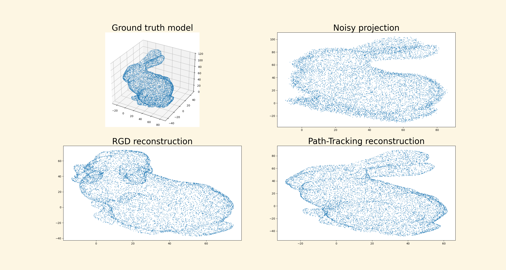

Modern Convex Optimization
Hidden Convexity and its Applications

Kevin Shu
Kevin Shu
Why Convex Optimization?
Why Convex Optimization?
Global Optimality Guarantees
Fast, Well Established Algorithms
Robust Theory
But not all optimization problems are convex!
A Cartographic View of Optimization
We want to solve some problem in engineering or mathematics, and can formulate it as an optimization problem.
A Cartographic View of Optimization
We want to solve some problem in engineering or mathematics, and can formulate it as an optimization problem.

A Cartographic View of Optimization
There may be other formulations of the problem that result in better maps.

Manifestations of hidden convexity in my work
- Design of first-order methods
How can we automate finding good stepsizes for gradient descent? - Hyperbolic polynomials for fundamental linear algebra
Debiasing polynomial regression with eigenvalues of random matrices - Combinatorial optimization
SDP bounds for expected clique numbers of random graphs
Projection Simplicity: Convexifying Optimization Problems1
1. Lagrangian Dual Sections: A Topological View of Hidden Convexity - V Chandrasekaran, T Duff, J Rodriguez, S.
Many basic optimization problems can be expressed as constrained optimization problems over nonconvex sets (e.g. manifolds, algebraic varieties).
Examples:
Quadratically Constrained Quadratic Programming (QCQP)
Stiefel Manifold Optimization
Orthogonal Procrustes Problems

Such problems are typically NP-hard. Convex optimization give bounds on the possible optimal value.
Example (QCQP):
$$\max \{x^{\intercal}A_0x : x^{\intercal}A_1x = c_1, \dots, x^{\intercal}A_kx = c_k\}$$
Such problems are typically NP-hard. Convex optimization give bounds on the possible optimal value.
Example (QCQP):
$$\max \{\tr(A_0X) : \tr(A_1X) = c_1, \dots, \tr(A_kX) = c_k, X =xx^{\intercal}\}$$
Such problems are typically NP-hard. Convex optimization give bounds on the possible optimal value.
Example (QCQP):
$$\max \{\tr(A_0X) : \tr(A_1X) = c_1, \dots, \tr(A_kX) = c_k, \color{red}{X \succeq 0}\}$$
Question: When are these relaxations tight?
Example of Hidden Convexity
Brickman's Theorem
$\{(x^{\intercal}A_0x, x^{\intercal}A_1x) : \|x\|=1\} \subseteq \R^2$ is convex.
Example of Hidden Convexity
Brickman's Theorem
$\{(x^{\intercal}A_0x, x^{\intercal}A_1x) : \|x\|=1\} \subseteq \R^2$ is convex.
Corollary
Any QCQP with two constraints has a tight convex relaxation.
Convex Images of Maps
If $M$ is a topological space (e.g. a manifold, an algebraic variety, $\R^k$), and $f : M \rightarrow \R^k$ is a continuous function, when is $f(M)$ convex?
Convex Images of Maps
If $M$ is a topological space (e.g. a manifold, an algebraic variety, $\R^k$), and $f : M \rightarrow \R^k$ is a continuous function, when is $f(M)$ convex?
We can give this an answer in terms of the Lagrangian $$ \mathcal{L}(t, x) = \langle t, f(x)\rangle.$$
Associate for each $t \in \R^k$ the optimization problem $$ \max_{x\in M} \mathcal{L}(t, x)$$
How do the maximizers depend on the choice of Lagrange multiplier $t$?
Convex Images of Maps
If $M$ is a topological space (e.g. a manifold, an algebraic variety, $\R^k$), and $f : M \rightarrow \R^k$ is a continuous function, when is $f(M)$ convex?
Theorem (informal)
Suppose that there is a continuous function $D : \R^k \rightarrow M$ so that $D(t)$ maximizes the function $\mathcal{L}(t, x)$ for every $t \in \R^k \setminus 0$. Then $f(M)$ is convex.
We call such a $D$ a Lagrangian Dual Section.
Convex Images of Maps
Implications for
- Stiefel manifold optimization
- QCQPs
- Inverse eigenvalue problems
Also related to Kostant convexity theorem.
An example from Steifel Manifold
Stiefel manifold - orthogonal projection matrices
\[\St^{n,m} = \{X \in \R^{n\times m} : X^{\intercal}X = I\}\]
Theorem
If $A_0, \dots, A_k$ span a linear subspace of $\R^{n\times m}$ containing no singular matrix (i.e. matrix of rank $< m$), then \[ \max \{\langle A_0, X\rangle : \langle A_1, X\rangle = c_1, \dots, \langle A_k, X\rangle = c_k, X \in \St^{n,m} \}=\]
\[ \max \{\langle A_0, X\rangle : \langle A_1, X\rangle = c_1, \dots, \langle A_k, X\rangle = c_k, \color{red}{\sigma_{max}(X) \le 1}\}.\]
Projection Simplicity
Optimization problems, even over complicated domains, often only depend on a few salient features of what you are optimizing.
Focusing on these features make it is possible to find simpler (convex) formulations of the problem.
How general is this phenomenon; can it be discovered and exploited automatically?
Path-tracking Algorithms
Continuity of optimal solutions suggests path-tracking approach to solve them.
Start at a known solution to one of these problems, and then vary the Lagrange multipliers until we reach an optimal solution. - CHORD algorithm
Analogous methods largely successful in convex optimization.
Unbalanced Procrustes Problems
Given a high dimensional point cloud $U$, and a low dimensional point cloud $V$, find a rotation/projection that best maps $U$ to $V$.
$$ \min_{X^{\intercal}X = I} \|UX - V\|^2.$$
A 3D model with different rotations/projections
A fixed noisy projection
Unbalanced Procrustes Problems
We can view this as a Lagrangian problem: $$\|UX - V\|^2 = \|AX\|^2 + \langle B, X\rangle + C,$$ where $A, B$ can be defined in terms of $A$ and $B$.
We want to solve $$\min \lambda \|AX\|^2 + \langle B, X\rangle,$$ when $\lambda = 1$. When $\lambda = 0$, this is an ordinary Procrustes problem.
Unbalanced Procrustes Problems
Summary
- Topological properties of the Lagrangian imply convexity
- Globally optimal path tracking algorithms
Future Directions
- Finding hierarchies of relaxations
- Approximate convexity analogues
Other work
Automatic Design of Algorithms1, 2, 3
1. Accelerated objective gap and gradient norm convergence for gradient descent via long steps
2. Composing optimized stepsize schedules for gradient descent
3. Beyond Minimax Optimality: A Subgame Perfect Gradient Method
All joint with A Wang and B Grimmer
Long step size gradient methods
- Can you make gradient descent asymptotically faster on convex functions just by tuning the step sizes longer? Yes! The required step sizes are interesting.
Game theoretically motivated optimization
- First order optimization is like a game being played between an optimizer and an adversarial first order oracle.
- An algorithm is like a strategy for this game.
- A minimax optimal algorithm is part of a Nash equillibrium for the game.
- Stronger equillibrium notions exist, like subgame perfect equillibrium, which also require the algorithm to be optimal in every iteration of the game.
First order methods
Problem: minimize a function $f$ using a first order oracle, which allows you to compute the gradients/values of $f$ at points of your choosing.
Example
Gradient descent sets $$x_{i+1} = x_i - h_i \nabla f(x_i)$$ for stepsizes $h_i$.
First order methods
Even if $f$ is convex, it is not clear how to design the algorithm using convex optimization.
The performance of a particular algorithm can be determined using a convex program.
First order methods
Performance Estimation
If we have a first order algorithm, then we can the following can be solved with a convex program: $$ \min_{\eta} \max_{f} f(x_{final}) - f_{min} \le \eta \|x_0-x_{min}\|^2, $$ where the inner maximization problem is over $L$-smooth, convex functions.
First order methods
There has been much recent work on designing algorithms for convex optimization using computer search. In particular, a minimax optimal method for smooth convex optimization was found (OGM).
Our work explores the trade-off between the resources required by the algorithm and its performance.
- Can we accelerate without needing to store an extra momentum vector?
- Can we achieve stronger guarantees by storing extra gradient history?
Acceleration without Momentum
Acceleration without Momentum
All known optimal methods for convex optimization requires an additional vector of memory to store a momentum vector.
Can we accelerate convex optimization without using momentum, just by tuning our step sizes.
For reference, gradient descent with constant step sizes achieves a rate of $O(1/T)$.
Our step sizes
Theorem (Grimmer, S., Wang)
There is a sequence of step sizes achieving a rate of convergence of $O(1/T^{1.01})$.
Theorem (Altschuler, Parrilo)
There is a sequence of step sizes achieving a rate of convergence of $O(1/T^{1.27})$.
Our step sizes
Theorem (Grimmer, S., Wang)
There is a sequence of step sizes achieving a rate of convergence of $O(1/T^{1.27})$ (with slightly better constants). The same rate of convergence can be obtained for the gradient norm.
Theorem (Altschuler, Parrilo)
There is a sequence of step sizes achieving a rate of convergence of $O(1/T^{1.27})$.
Our step sizes
We actually found a nice algebraic theory of how to construct these step size patterns by concatenating smaller step size patterns of any length (earlier work only constructed these step sizes when $T = 2^{k}-1)$.
Subgame Perfect Gradient Methods
Subgame Perfect Gradient Methods
What if we can remember more information than just one momentum vector?
This cannot improve the a priori convergence rate, as that is already known to be minimax optimal.
Can we analyze an algorithm's performance beyond its worst-case a priori guarantee?
Subgame Perfect Gradient Methods
No algorithm can guarantee a better performance than OGM before it sees any gradients.
After seeing a few gradients, the situation may change. It may be that OGM does not perform optimally on functions which agree with those first few gradients.
Subgame Perfect Gradient Methods
The function $\frac{L}{2}x^2$ is a worst case function for OGM; OGM runs as slowly on this function as it does on any function.
After seeing any 2 gradients of this function of opposite sign, it is already possible to conclude that the minimum is at 0.
Subgame Perfect Gradient Methods
A method is subgame perfect if it is not possible to improve the performance guarantee of the algorithm, after seeing any number of gradients.
After seeing a few gradients, the situation may change. It may be that OGM does not perform optimally on functions which agree with those first few gradients.
Subgame Perfect Gradient Methods
We can achieve this by solving a second order cone program in each iteration:
$$ \sup_{v}\set{ \langle{c,v}\rangle :\, \begin{array}{l} \|A v\|^2 \leq \langle b, v\rangle\\ v\geq 0 \end{array}}.$$This optimization problem essentially tries to find an 'optimal' momentum vector in each iteration.
Subgame Perfect Gradient Methods
Hyperbolic polynomials for linear algebra1, 2, 3
1. Hyperbolic Relaxation of k-Locally Positive Semidefinite Matrices - G Blekherman, S Dey, S Sun
2. Debiasing Polynomial and Fourier Regression - C Camaño and R Meyer
Hyperbolic polynomials
- Polynomials with real rootedness properties
- Arise in convex optimization, sampling theory, combinatorics
Debiasing Polynomial and Fourier Regression
- Active sampling - how do you find a polynomial approximation of a function $f$ without knowing $f$ explicitly?
- Given an oracle for computing $f(x)$, how do you find the best polynomial approximation of $f$ in the $L_{\mu}$ norm using as few evaluations as possible?
- A surprising algorithm: sample a random matrix $X$ from the $\mu$-unitary ensemble, compute its eigenvalues $\lambda_0, \dots, \lambda_d$, and interpolate a polynomial $\hat{p}$ so that $\hat{p}(\lambda_i) = f(\lambda_i)$ for each $i$. $\E[\hat{p}] = p^*$.
Approximate PSD checking
- Approximate PSD checking - If you know that all $k\times k$ submatrices of an $n\times n$ matrix are PSD, how far is that matrix from being PSD?
- We show that the worst case always has all equal diagonal entries and all equal off-diagonal entries for an arbitrary matrix norm distance metric using a convex relaxation from hyperbolic polynomials.